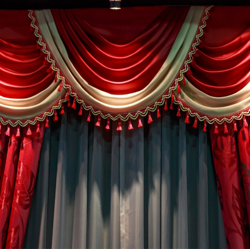

Party mode curtains are the easiest way to turn a plain space into a full-on celebration zone. Birthday, wedding, engagement, corporate event, baby shower, or even a last-minute house party. If the backdrop hits right, everything else falls into place. In Bangladesh, party mode curtain prices are pretty flexible, which means you can go budget-friendly or premium depending on how fancy you want the vibe.
Here is a true breakdown of party-mode curtain prices in Bangladesh: costs differ depending on the fabric, print quality, size, lining, and whether you choose a custom or ready-made option. At Curtivelle, we provide premium fabric materials, excellent customer service, and the most competitive pricing.
Call for CurtainsTypes of Party-Mode Curtain in Bangladesh
Party mode curtains come in different styles because not all parties are built the same. Each type serves a different mood, budget, and setup requirement. Below are the most popular types of party mode curtains in Bangladesh:
LED Party Mode CurtainsLED party curtains are a top choice for night events and indoor parties. They’re perfect for birthdays, wedding stages, receptions, and social media content corners. |
Metallic / Foil Party CurtainsMetallic or foil curtains are lightweight, shiny, and super affordable. Available in gold, silver, rose gold, and holographic finishes, they’re ideal for casual birthdays and quick party setups. |
Velvet Party Mode CurtainsThe fabric is thick, rich, and elegant, making it perfect for weddings, engagements, and formal events. If you want a luxury look that doesn’t feel cheap under lights, velvet is the move. |
Sheer / Net Party CurtainsSheer or net curtains are soft, classy, and extremely versatile. They work beautifully on their own or layered with LED lights, balloons, or floral decor. These are reusable and ideal for both home and venue decorations. |
Balloon-Themed Party CurtainsBalloon curtains combine fabric backdrops with balloon arrangements to create a fun, playful atmosphere. Popular for kids’ birthdays, baby showers, and gender reveal parties, these setups are colorful and highly customizable. |
Printed & Custom Party Mode CurtainsPrinted party curtains allow full customization—names, themes, logos, cartoon characters, or event messages. These are perfect for branded events, milestone birthdays, and themed celebrations where personalization matters. |
What Affects Party Mode Curtain Price?
Party mode curtain prices don’t change randomly. Several key factors directly influence how much you’ll pay. Understanding these helps you avoid overpaying and choose the right curtain for your event.
- Fabric Quality: Foil and basic polyester curtains are cheaper, while velvet and premium net fabrics cost more due to durability and finish. Better fabric means better drape, better photos, and longer reuse value.
- Size & Coverage Area: A small photo backdrop costs less than a full wall or stage setup. Larger curtains require more fabric, stitching, and sometimes support structures, which increases the price.
- Lighting & Accessories: Curtains with built-in LED lights, remote controls, USB power options, or extra wiring are more expensive—but they significantly upgrade the overall look, especially at night.
- Customization Level: Printed designs, custom colors, names, or logos add production cost. Custom party mode curtains are priced higher but deliver a unique, branded feel.
- Stitching & Finishing: Ready-made curtains are cheaper. Custom-stitched curtains with pleats, layers, or reinforced edges cost more but look cleaner and more professional.
- Reusability: One-time foil curtains are cheaper upfront. Fabric and velvet curtains cost more initially but can be reused for multiple events, making them cost-effective long-term.
How to Choose the Right Party Mode Curtains
Choosing the right party mode curtain depends on your event type, budget, and how long you plan to use it. The goal is simple: match the curtain with the vibe and get the best visual impact without overspending. Key points to consider:
- Event type: Metallic or balloon curtains are perfect for casual birthdays and one-day events, while velvet or layered sheer curtains suit weddings and formal programs.
- Lighting & photography: For night events, reels, or photoshoots, LED party curtains give better glow and camera results.
- Space measurement: Always measure your backdrop area so the curtain fits properly and looks well-proportioned.
- Usage plan: Decide whether you need a one-time decorative curtain or a reusable option for future events.
Buy Party Mode Curtains from Curtivelle
Buying party mode curtains from Curtivelle means stress-free shopping with guaranteed quality. From budget foil curtains to premium velvet and LED setups, everything is designed for Bangladeshi homes and event spaces. We offer every kind of curtain that is available in Bangladesh, including interior-based, style-based, and seasonal curtains.
- A large variety of textiles and designs
- Personalized sizing for the ideal fit
- Blackout and lining options are optional.
- Expert curtain consultation
- Modern finishing, neat stitching, and no shortcuts
FAQ about party mode curtain
What is the price range of party mode curtains in Bangladesh?
Party mode curtain prices in Bangladesh usually start from around ৳120 for metallic or foil curtains and can go up to ৳3,500+ for premium LED or velvet party curtains, depending on size and quality.
Which party mode curtain is best for birthdays and casual parties?
Metallic foil, balloon-themed, or sheer party curtains are ideal for birthdays and casual events because they are affordable, colorful, and easy to set up.
Are LED party mode curtains reusable?
Yes, LED party mode curtains are reusable if handled properly. Good-quality LED curtains can be used multiple times for birthdays, weddings, and other events.
How do I choose the right size for a party mode curtain?
Measure the width and height of your backdrop or wall area before buying. Always choose a slightly larger size for better coverage and a cleaner look.
Can party mode curtains be customized?
Yes, many party mode curtains can be customized with printed names, themes, logos, colors, or specific sizes, especially for birthdays, weddings, and corporate events.